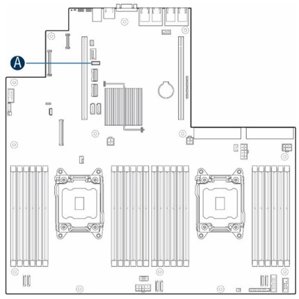
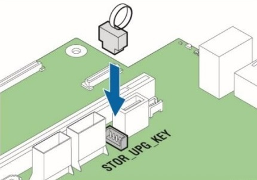
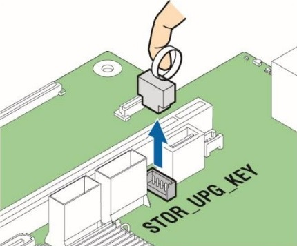

Environment
Intel® VROC
Intel® Virtual RAID on CPU (Intel® VROC) Hardware Key Installation Guide
Content Type: Install & Setup | Article ID: 000030447 | Last Reviewed: 03/12/2025
Intel® Virtual RAID on CPU (Intel® VROC) is an enterprise RAID solution that unleashes the performance of NVMe* SSDs. Intel® VROC is enabled by a feature in Intel® Xeon® Scalable processors called Intel® Volume Management Device (Intel® VMD), an integrated controller inside the CPU PCIe root complex. NVMe* SSDs are directly connected to the CPU, allowing the full performance potential of fast storage devices to be realized. Intel® VROC enables these benefits without the complexity, cost, and power consumption of traditional hardware RAID host bus adapter (HBA) cards placed between the drives and the CPU.
Intel® VROC hardware keys are used to enable different RAID features on systems that support Intel® VROC. The hardware key is one of the options offered as mechanisms to acquire Intel® VROC licenses. For more details about the Intel® VROC licenses, refer to Intel® Virtual RAID on CPU (Intel® VROC) SKUs and Licensing.
The Intel® VROC hardware key is inserted into the motherboard header to enable the desired Intel® VROC feature set. There are two types of Intel® VROC hardware keys:
| SKU | Item Name |
Color |
Item Description |
|---|---|---|---|
|
Standard |
VROCSTANMOD |
Black |
Intel® VROC Standard SKU (RAID 0/1/10) |
|
Premium |
VROCPREMMOD |
Red |
Intel® VROC Premium SKU (RAID 0/1/5/10) |
To properly install the Intel® VROC hardware key, follow the steps below.
Step 1. Preparing the Server
- Observe all safety and ESD precautions for your server board and chassis. If you are using an Intel® Server board, check the following Safety and Regulatory Compliance Information, otherwise refer to your platform OEM documentation.
- If your server system is running, power off all peripheral devices attached to it, power down the server, and disconnect the AC power cord from the server.
- Remove the chassis cover. Reference your server chassis documentation for instructions.
Step 2. Installing the Intel® VROC Hardware Key
- Carefully remove the Intel® VROC hardware key from its packaging.
- Locate the SATA RAID or Intel® VROC connector on the server board. If you are
facing the front of your server, the headers are usually located near the SATA ports
on the board.
- The connector headers consist of four pins. Reference your server board documentation to confirm the location of the headers.
- The following figure shows an example of the location of the Intel® VROC hardware key headers on a typical server motherboard. The letter A shows the location of the Intel® VROC hardware key headers. The location of the key headers on your server board may vary.

Location of the Intel® VROC Hardware Key on the server board - Carefully pick up the Intel® VROC hardware key. Match the key and the
connecter orientation and press down to install it

Installing the Intel® VROC Hardware Key on the Server Board Header
Step 3. Finishing Up the Hardware
- Reinstall any components inside of the server chassis that you needed to remove. Reference your server board or chassis documentation for instructions.
- Install the server chassis cover and connect the AC power supply.
- Watch the boot screen during POST for the Ctrl + <letter> key combination to press. Press this control key combination to enter the Intel® VROC BIOS console setup utility and configure your RAID volumes.
Removing the Intel® VROC Hardware Key
Use the following instructions if you need to remove the Intel® VROC hardware key:
- Follow the instructions in the Preparing the Server step above.
- Hold the pull-ring with the finger, and then carefully pull the Intel®
VROC hardware key from the server board header.

Removing the Intel® VROC Hardware Key from the Server Board Header - Follow the instructions in the Finishing Up the Hardware step above.